DEV
游戏说明
玩家进入游戏时，可在炮台处点击【＋】、【－】按钮调整发射子弹的押注额。
若设置炮台为【自动】，系统将会自动延续原有押注额，朝向指定的方向发射子弹。
若设置炮台为【锁定】，系统将会自动延续原有押注额，只针对锁定的物种进行攻击。
子弹发射后，若击中物种且捕获成功即可得分。
赔率说明
彩金计算方式：押注额 x 击中物种赔率 = 获得彩金
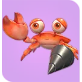
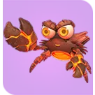
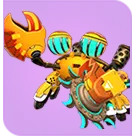
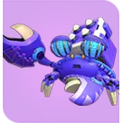
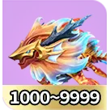
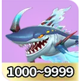
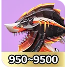
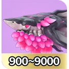
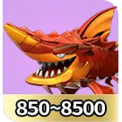
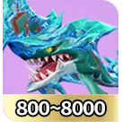
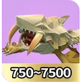
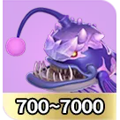
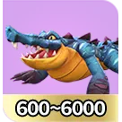
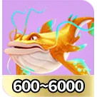
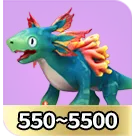
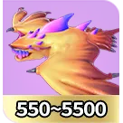
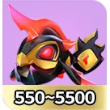
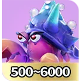
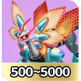
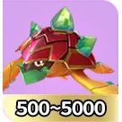
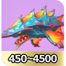
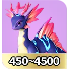
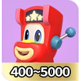
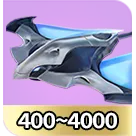
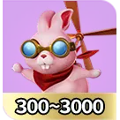
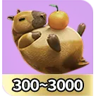
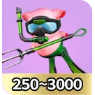
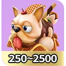
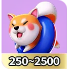
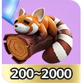
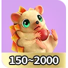
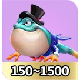
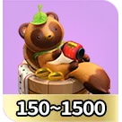
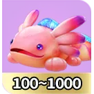
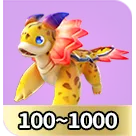
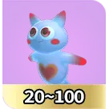
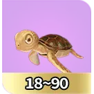
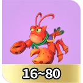
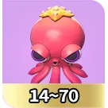
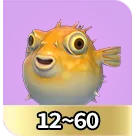
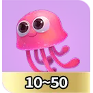
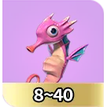
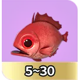
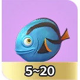
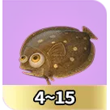
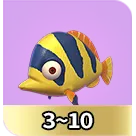
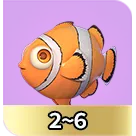
特殊武器
游戏中有机会出现特殊武器螃蟹，捕获会获得武器。
钻头炮发射出去后，会对路径上的所有物种进行攻击，钻头炮经过一段时间会消失，并且会结算期间获得的所有彩金。
火山炮发射出去后，会对画面上的所有物种进行攻击，火山炮经过一段时间会消失，并且会结算期间获得的所有彩金。
锯齿炮发射出去后，会对路径上的所有物种进行攻击，锯齿炮经过一段时间会消失，并且会结算期间获得的所有彩金。
导弹炮发射出去后，会对区域内的所有物种进行攻击，导弹炮经过一段时间会消失，并且会结算期间获得的所有彩金。
※30秒内没发射特殊武器会由系统自动发射。